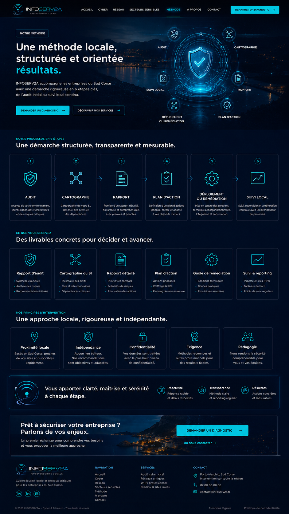

Rapport d’audit
- Synthèse exécutive
- Analyse des risques
- Recommandations initiales

Notre méthode
INFOSERV2A accompagne les entreprises du Sud Corse avec une démarche rigoureuse en 6 étapes clés, de l’audit initial au suivi local continu.
Notre processus en 6 étapes
Analyse de votre environnement, identification des vulnérabilités et des risques critiques.
Cartographie de votre SI, des flux, des actifs et des dépendances.
Remise d’un rapport détaillé, hiérarchisé et compréhensible, avec preuves et priorités.
Définition d’un plan d’actions priorisé, chiffré et adapté à vos objectifs métiers.
Mise en œuvre des solutions techniques et organisationnelles.
Suivi, supervision et amélioration continue avec un interlocuteur de proximité.
Ce que vous recevez
Nos principes d’intervention
Basés en Sud Corse, proches de vos sites et disponibles rapidement.
Aucun lien éditeur. Nos recommandations sont objectives et adaptées.
Vos données sont traitées avec le plus haut niveau de confidentialité.
Méthodes reconnues et outils professionnels pour des résultats fiables.
Nous rendons la sécurité compréhensible pour vous et vos équipes.
Un premier échange pour comprendre vos besoins et vous proposer la meilleure approche.